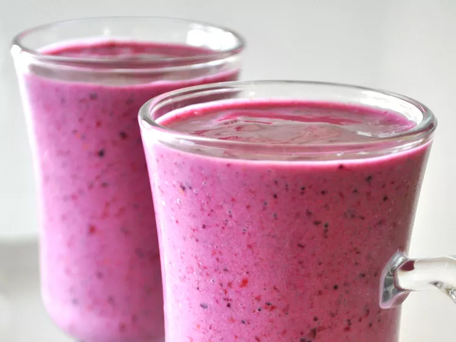

Fruit & Yogurt Smoothie

This yogurt smoothie recipe is delicious! You may substitute the strawberries for any other berries or fruit.
- Cook Time 05 min
- Servings 2
Ingredients
- 1 cup strawberries
- 1 banana
- ½ cup yogurt
- ¼ cup pineapple juice
- 1 ½ teaspoons white sugar
- 1 teaspoon orange juice
- 1 teaspoon milk
Steps
- Combine strawberries, banana, yogurt, pineapple juice, sugar, orange juice, and milk in a blender; blend until smooth.